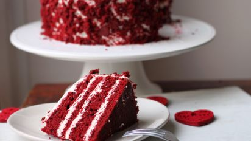
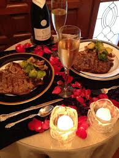
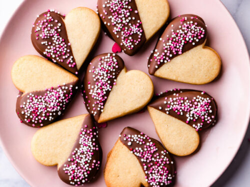

Crazy-Good Red Velvet Recipe
Every dessert is better when you make it red velvet.
Aphrodisiac Valentine's Day Recipe
Try some of these recipes to warm up a romantic evening with that special someone.
Valentine Sugar Cookies
We really liked these cookies. I thought they were a little bland unfrosted, but with the frosting made as you suggested they were delicious. I love the cakey texture with just a bit of crispness.